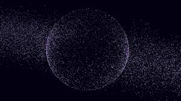

Teoría: Universo de Información

¿Qué dice esta teoría?
La teoría del Universo de Información propone que la realidad no está formada fundamentalmente por materia o energía, sino por información. Según este modelo, todo lo que existe —partículas, fuerzas y espacio— sería el resultado de estructuras de información organizadas.
En lugar de pensar en el universo como algo físico, esta teoría sugiere que el cosmos funciona como un sistema donde los datos se procesan, se transforman y se reorganizan constantemente.
Evidencia científica
Algunas ideas en la física moderna han explorado la relación entre información y realidad, como el papel de la información en la mecánica cuántica y en el estudio de los agujeros negros.
Estos enfoques sugieren que la información podría ser una propiedad fundamental del universo, lo que ha llevado a propuestas teóricas sobre su papel en la estructura de la realidad.
Pregunta abierta
Si todo en el universo es información, surge la pregunta de cómo se origina y se mantiene ese sistema. ¿Existe un "soporte" físico para la información o puede existir por sí sola?
Actualmente no existe evidencia directa que confirme que el universo esté compuesto únicamente de información, por lo que esta teoría permanece como una propuesta especulativa.